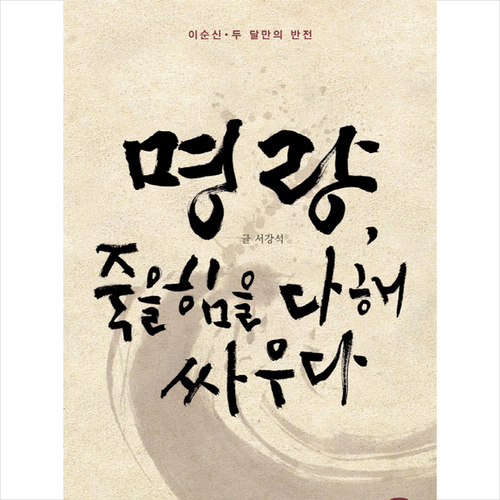

- 1. 경제
- 2. 역사
제목:명량

[줄거리]
1597년 정유재란, 대공세를 준비하던 일본군은
이순신이 죽지 않고 풀려났다는 정보를 대수롭지 않게 여긴다.
직책도 없이 복귀하는 이순신은 더 이상 두려움의 대상이 아니었다.
게다가 이미 조선 수군은 칠천량에서 참패해 궤멸 직전이었다.
관망하는 명군은 전세를 보고 물러날 게 뻔했다.
거리낄 게 없는 왜군은 이순신을 안중에도 두지 않았지만 어떤 왜장들은 달리 생각했다.
이순신을 제거하기 위해 특수전에 능한 까마귀 부대를 비밀리에 출격시킨 것이다.
이순신은 남행하며 흩어진 군대를 모으기도 하고 첩보도 확보하지만 추격하는 정예 군대를 막는 것은 역부족이다.
시시각각 거리를 좁혀 오는 까마귀부대의 가공할 전력을 상대하며 이순신은 어떻게 살아남을 것인가?
그리하여 당도한 남해에서 그를 기다리는 것은 무엇인가? 육전에서는 남원성이 함락되고,
고흥반도에는 수백 척의 왜군 대선단이 정박해 대공세를 준비한다.